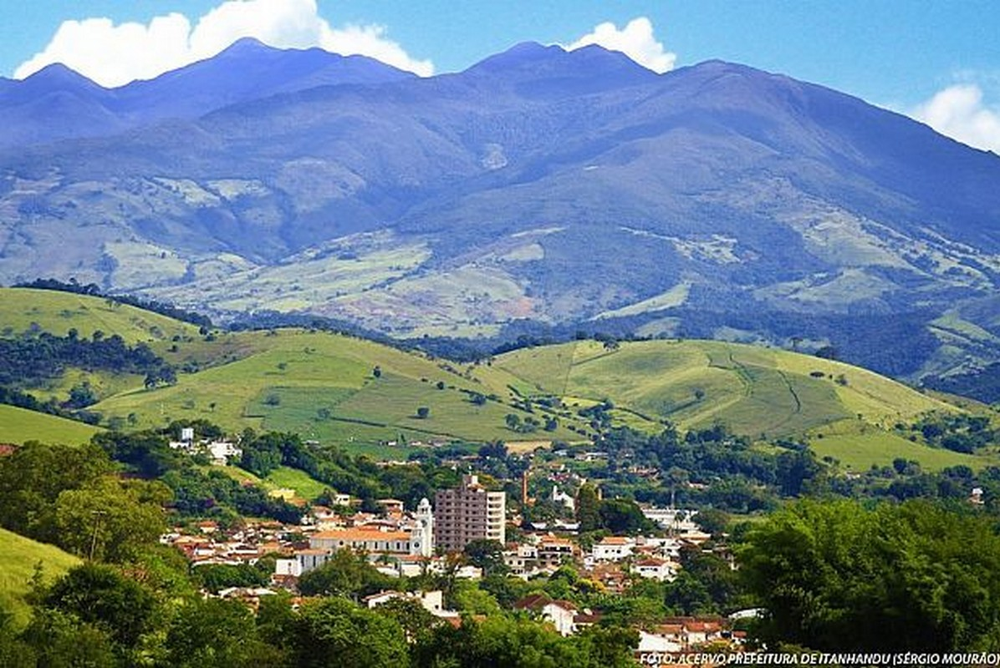
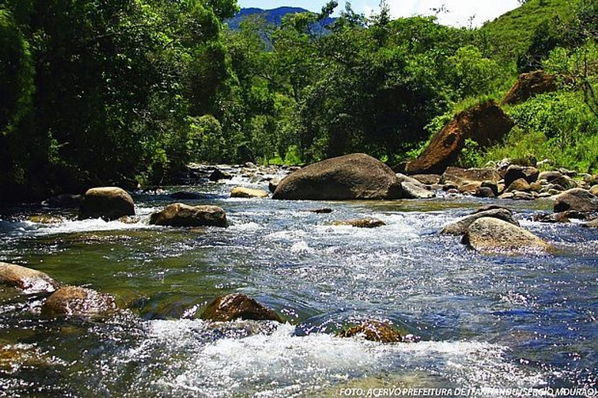

CIDADE DE ITANHANDU

Sobre Itanhandu:
No princípio do século XVIII, um pequeno aglomerado de casas, circundado por várias fazendas, deu origem ao arraial
de Barra do Rio Verde, que se localizava aos pés da Mantiqueira e era banhado pelos rios Verde, Passa Quatro e
Ribeirão Itanhandu.
Em 1882 o arraial de Barra do Rio Verde acompanhou a chegada dos ferroviários que iniciaram a construção da estrada
de ferro que ligaria o lugarejo aos estados de São Paulo e do Rio de Janeiro e daria acesso a outras cidades
mineiras. O tráfego foi inaugurado em 1884 e a nova estação ferroviária denominou-se Capivari, por ser escoadouro do
Distrito de Santana do Capivari, integrante do município de Pouso Alto. Depois de Barra do Rio Verde, o arraial
passou a ser denominado Estação de Capivari, e, somente em 1904, a população mudou a denominação da localidade para
Itanhandu.
O nome Itanhandu, é de origem tupi-guarani e era chamado assim pelos índios Cataguases, porque o Rio Verde forma
grandes quantidades de pedras que correm ao longo das Eras(seixos rolados) e significa ITA = pedra; NHANDU =
corredeira, riscos, ema ou aranha, favorecendo as seguintes interpretações: pedras que correm ou seixos rolados,
pedras
riscadas ou seixos raiados, ema na pedra ou ema de pedra, aranha na pedra ou aranha de pedra. Além dessas versões,
os
antepassados também reconhecem para Itanhandu os significados de pássaro na pedra e, até mesmo, pássaro de pedra,
argumentando o fato de haver grande quantidade de pássaros sobre as pedras do Rio Itanhandu.
Em 1911, o arraial Itanhandu passou a Distrito, pertencente ao município de Pouso Alto. Finalmente em 1923,
Itanhandu
torna-se município, e no ano 1940 foi elevado a Comarca.
FONTE: http://www.itanhandu.mg.gov.br/portal/index.php?option=com_content&view=category&layout=blog&id=1&Itemid=2
